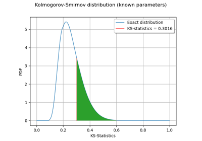

TestResult¶
- class TestResult(*args)¶
Test result data structure.
Warning
Tests results are not intended to be created manually. They are returned by the statistical tests implemented in the
stattestssubpackage. Constructor is therefore intentionally not documented.Notes
The p-value of a test can be seen as the probability of observing a sample having a worst or equal statistic than the one that has been calculated on the tested sample, under the null hypothesis. This is the metric that is used for concluding the test with respect to the given accepted risk of committing a Type I error, that is an incorrect rejection of a true null hypothesis.
Examples
>>> import openturns as ot >>> ot.RandomGenerator.SetSeed(0) >>> distribution = ot.Normal() >>> sample = distribution.getSample(30) >>> dist, test_result = ot.FittingTest.Lilliefors(sample, ot.NormalFactory(), 0.01) >>> print(test_result.getPValue()) 0.4956... >>> print(test_result.getThreshold()) 0.01... >>> print(test_result.getBinaryQualityMeasure()) True
Methods
Accessor to the test's binary conclusion.
Accessor to the object's name.
getId()Accessor to the object's id.
getName()Accessor to the object's name.
Accessor to the test's p-value.
Accessor to the object's shadowed id.
Accessor to the used statistic for decision.
Accessor to the accepted risk of committing a Type I error.
Accessor to the object's visibility state.
hasName()Test if the object is named.
Test if the object has a distinguishable name.
setName(name)Accessor to the object's name.
setShadowedId(id)Accessor to the object's shadowed id.
setVisibility(visible)Accessor to the object's visibility state.
getDescription
getTestType
setDescription
- __init__(*args)¶
- getBinaryQualityMeasure()¶
Accessor to the test’s binary conclusion.
- Returns:
- binary_measurebool, optional
Test conclusion: False if it can reject the null hypothesis, True if it cannot.
- getClassName()¶
Accessor to the object’s name.
- Returns:
- class_namestr
The object class name (object.__class__.__name__).
- getId()¶
Accessor to the object’s id.
- Returns:
- idint
Internal unique identifier.
- getName()¶
Accessor to the object’s name.
- Returns:
- namestr
The name of the object.
- getPValue()¶
Accessor to the test’s p-value.
- Returns:
- p_valuefloat,
![0 \leq p \leq 1]()
The test’s p-value.
- p_valuefloat,
- getShadowedId()¶
Accessor to the object’s shadowed id.
- Returns:
- idint
Internal unique identifier.
- getStatistic()¶
Accessor to the used statistic for decision.
- Returns:
- statisticfloat
Measure used for the statistical test.
- getThreshold()¶
Accessor to the accepted risk of committing a Type I error.
- Returns:
- thresholdfloat,
![0 \leq \alpha \leq 1]()
Accepted risk of committing a Type I error.
- thresholdfloat,
- getVisibility()¶
Accessor to the object’s visibility state.
- Returns:
- visiblebool
Visibility flag.
- hasName()¶
Test if the object is named.
- Returns:
- hasNamebool
True if the name is not empty.
- hasVisibleName()¶
Test if the object has a distinguishable name.
- Returns:
- hasVisibleNamebool
True if the name is not empty and not the default one.
- setName(name)¶
Accessor to the object’s name.
- Parameters:
- namestr
The name of the object.
- setShadowedId(id)¶
Accessor to the object’s shadowed id.
- Parameters:
- idint
Internal unique identifier.
- setVisibility(visible)¶
Accessor to the object’s visibility state.
- Parameters:
- visiblebool
Visibility flag.
Examples using the class¶



Kolmogorov-Smirnov : understand the p-value